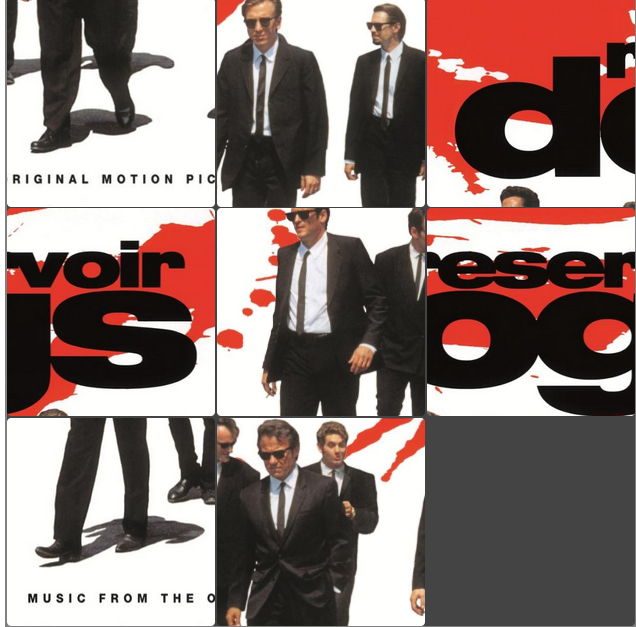

Sliding image puzzle

Challenges
- Implementing the tile movement logic, ensuring only adjacent tiles can swap with the empty one.
- Managing each tile position using a grid system and attributes.
- Handling image shuffling while keeping the empty tile fixed and the puzzle always solvable.
- Detecting victory by comparing tile positions with their correct order.
This project recreates the classic sliding image puzzle game where a picture is divided into a 3×3 grid with one tile missing. The goal is to rearrange the shuffled tiles until the original image is restored. Players click on tiles adjacent to the empty space to slide them into place. The game automatically checks after every move to see if the puzzle has been solved and displays a victory message when completed.